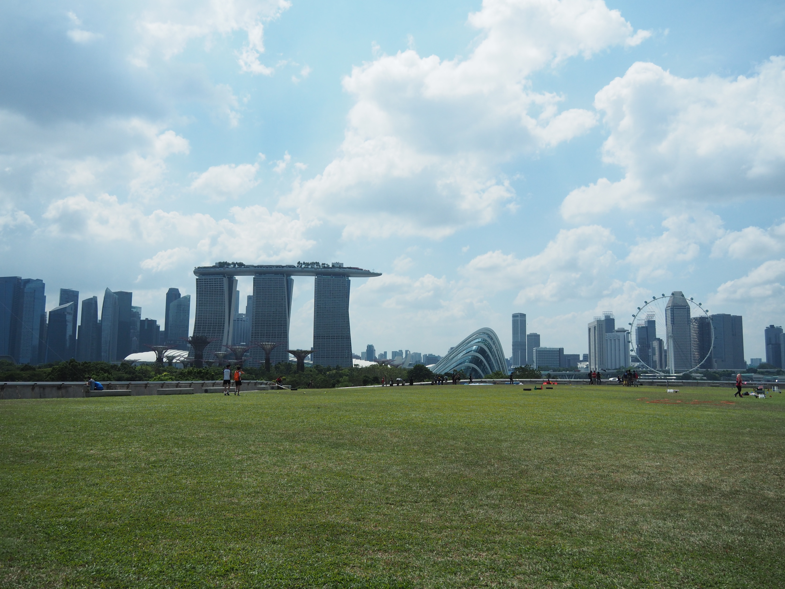

Conclusion
Before we went to Singapore and did our questionnaire, we think that Hong Kong have a worse work-life balance than Singapore as it has a lower ranking of OECD Better Life Index and a longer working hours.
After comparing the questionnaire which are done by the citizens of Hong Kong and Singapore, we found our that they are quite similar, even on some question, Hong Kong has a higher rating on it. For example, although in both cities, about half of the citizens have 3-4 hours leisure time, Hong Kong citizens has less working hours comparing to Singapore. However, there are also some criteria that Singapore has better result, like there more people rate higher than 3 for the question of having a good work-life balance.
Concluding all the data we have got, we think that the work-life balance of Singapore and Hong Kong is similar. Also, shorten the working or school hours is a point where the both of the governments can work on to improve the work-life balance of the citizens.